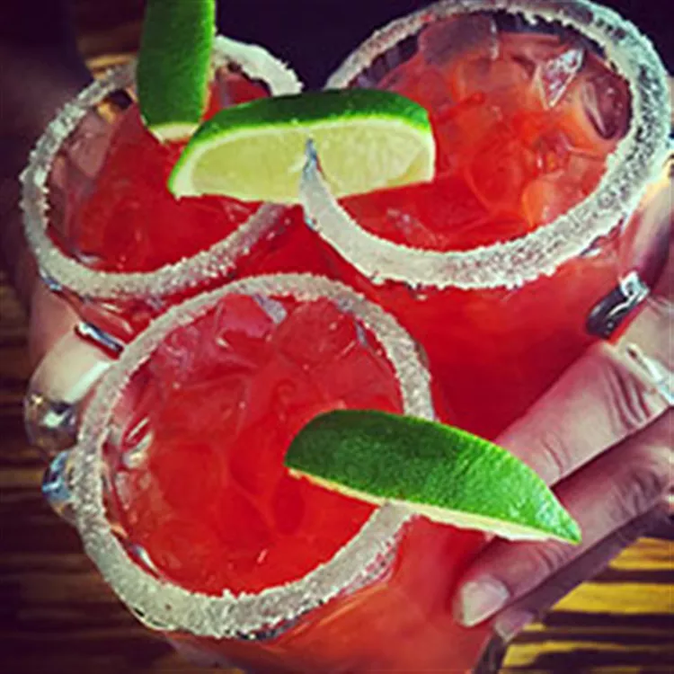

Description
Whether you're grilling or partying, Chelada is the perfect combination of Clamato and beer that will stimulate your senses.
Ingredients
- Key lime juice or ReaLime, or to taste
- 4 ½ ounces Clamato® Tomato Cocktail
- 1 dash Worcestershire sauce
- 2 dashes habanero pepper sauce
- 1 (12 ounce) bottle beer
- Ice, as needed
- 1 lime wheel
- 4 tablespoons kosher salt
- 2 teaspoons chili powder
- 1 teaspoon dried oregano
- Rose's® sweetened lime juice, as needed
Steps
-
In a shaker with ice, combine key lime juice, Clamato, Worcestershire sauce and habanero pepper sauce; shake well to chill. Serve in a rimmed tall glass with ice; fill with beer. Garnish with lime wheel.
-
Rimming Spice Blend: Combine kosher salt, chili powder and oregano onto small plate. Pour lime juice onto another small plate. Dip rim of glass into juice lime, then dip carefully into spice blend.
-
Enjoy responsibly!